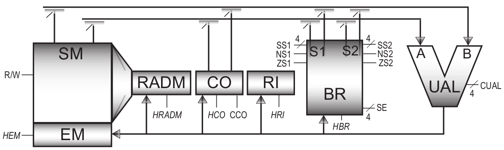

One factor that limits a computer system's overall performance is the data transfer time between the processor and central memory. There are several techniques to improve this point; we will focus on one of them: the multiplication of registers.
The main idea behind increasing the number of registers is simple: it is the data in the registers that is most quickly available to the UAL, so it is faster to do, for example, an addition between 2 registers than an addition between 1 accumulator and a word in main memory as in the case of the course machine.
We will keep the same choices for this processor as for the course machine: Von Neumann architecture, 16-bit words and addresses. Instead of an accumulator, 16 registers (denoted R0 to R15) are available; data exchanges between the central memory and the processor are carried out only with the LDRx and STRx instructions; arithmetic operations take their operands from one register and store their result in another.
The following table describes the external architecture:
| Instruction | format | Description |
|---|---|---|
| LOAD #val, Rxxxx | 0000 ---- ---- xxxx val |
Loading val into Rxxxx (immediate mode) |
| LOAD adr, Rxxxx | 0001 ---- ---- xxxx adr |
Loading the content of the address word adr into Rxxxx (direct mode) |
| LOAD (Ryyyy), Rxxxx | 0011 ---- yyyy xxxx | Loading the content of the address contained in Ryyyy into Rxxxx |
| STORE Rxxxx, adr | 0101 ---- ---- xxxx adr |
Storage of Rxxxx contents in memory at adr address |
| STORE Rxxxx, (Ryyyy) | 0111 ---- yyyy xxxx | Storage of the contents of Rxxxx in memory at the address contained in Ryyyy |
| TFR Ryyyy, Rxxxx | 0010 ---- yyyy xxxx | Transfer of Ryyyy into Rxxxx |
| ADD Ryyyy, Rzzzz, Rxxxx | 1000 yyyy zzzz xxxx | Add Ryyyy and Rzzzz and put the result in Rxxxx |
| SUB Ryyyy, Rzzzz, Rxxxx | 1001 yyyy zzzz xxxx | Subtract Rzzzz from Ryyyy and store the result in Rxxxx |
| JMP adr | 1100 ---- ---- ---- adr |
Jump to adr address |
| Jz Rxxxx, adr | 1110 ---- ---- xxxx adr |
Jump to adr if content of Rxxxx is null |
| Jn Rxxxx, adr | 1111 ---- ---- xxxx adr |
Jump to adr if content of Rxxxx is negative |
As with the course machine, you will note that the instructions are 1 or 2 words.
The data path which will serve as the basis for the design of the processor follows that of the course machine by replacing the accumulator register with a bank of 16 registers with one input (selection of the register with the signal SE, loading on the rising edge of HBR) and two outputs (selection with signals SS1 and SS2); 2 indicators are associated with each output indicating whether it is zero (ZSi) or negative (NSi). The computer counterclock (HCO) loads the CO if the CCO signal is one and increments it otherwise. The arithmetic and logic unit is assumed to have all the necessary operations.
Determine the data path and sequencer equations of the processor described.